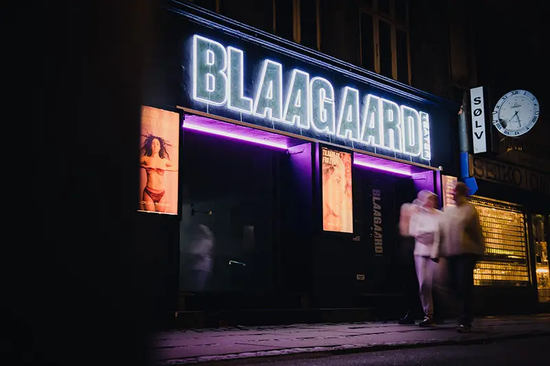

Portfolio - Gruppe 1 (MMD F22)
Links til div. materiale
- Landingpage
- Præsentation
- Procesdokumentation
Video materiale
Vores kampagnevideo er primært skudt skudt på 2 lokationer. Den ene lokation er Ølsnedkerens lokaler, som vi var heldige at vi kunne få lov til at låne, og den anden var ude foran Blaagaards teater og i nærområdet på Nørrebro.
Kampagne video for Blaagaard Teater.
Tak til "Mig og Oelsnedkeren" for laan af deres loakaler.
Vi startede med at lave en previz, så vi havde en fælles grundide for hvordan vores færdige produkt skal komme til at se ud. Herefter har vi lavet et storyboard og en synopsis, som har givet os en oversigt over de scener og framings, der skal være på de forskellige skud. Efter video er blevet filmet har vi valgt at arbejde med en masterfil, samt opdele kampagne videoen i flere små sekvenser, så vi kunne arbejde på videoen fra flere maskiner.
SoMe video for Blaagaard Teater.
Tak til "Mig og Oelsnedkeren" for laan af deres loakaler.
I vores SoMe video, som er lavet i en aspect-ratio 1/1, er lavet ved at vælge nogle primære dele ud fra den “lange” kampagne video. Disse dele er blevet flyttet over på en ny frekvens, hvor vi har både højden og bredden 1080 px. Herefter er der brugt keyframes, samt skalering for at få tilpasset videoen til det mindre kanvas den nu skal være på.
Foto materiale
SoMe opslag billede.
Billedet brugt til Instagram post i vores kampagne
Dette er et billede, som skal være en del af vores SoMe kampagne, hvor vi inddrager meninger og kommentarer fra teatrets gæster. Vi har brugt Blaagaards egen grafik fra deres designguide, samt lavet et billede ved at tage stillbilleder ud fra vores video.

Billeder fra Landingspage
Billederne som er blevet uploadet og brugt på landingpagen til Blaagaard
På vores landingpage har vi brugt en blanding af billeder vi selv har taget under optagelserne, samt billeder fra blaagaards egen side. Billedet af facaden af blaagaard har vi selv taget, og måden vi har opnået dette resultat er en blanding er flere tiltag. Først og fremmest er billedet taget i RAW format, som gør at vi har en masse information at arbejde med når vi kommer til postproduktionen. Herudover er billedet skudt med en relativt lav lukkertid, som dels gør at der kommer mere lys i billedet, men også at dem, som bevæger sig i billedet bliver slørede.
